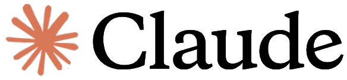

How I work
I start with the process, not the model. I map how the work moves today, find the steps that eat the most hours and automate those first. Every agent ships with logs, so you can always see what it did and why.
In production
6,700+support conversations automated
21,000+agent minutes saved
100%Upwork job success, Top Rated Plus
3regions: the US, UK and Middle East
The stack

 Make
Make GHL
GHL

 OpenAI
OpenAI Airtable
Airtable Twilio
Twilio
MH
Muhammad HarisAI automation engineer
Who am I? An engineer who ships AI.
hello@autoany.ioAbout / 02